Case Study: UX/UI Design of a Travel Companion Super App
This post is related to an assignment for my SOEN 357 class.
Introduction
Traveling is complicated. Figuring out how to get there, figuring out where to stay, and figuring out how to get around is tough. Some might even say it takes the joy out of traveling.
The thing is, each of these problems have solutions. Services like Google Flights and Skyscanner exist for finding flights. Airbnb and Vrbo can help you find a place to stay. Finally, services like Turo and Getaround give you a way to travel at your destination. Beyond these also exist hundreds of bespoke hotel, car rental, and airline websites.
The problem with using these services is that they’re all disjoint. You have to keep track of payments, timelines, and requirements for each of them on your own. Even if you just use the three most popular, that’s still three things to keep track of. Not an easy task! But you know what’s easier than keeping track of three things? Keeping track of one thing.
Understanding the Problem
The fragmented experience created by juggling multiple isolated services is stressful and error-prone. Creating a super-app that manages all three would turn effortless this complicated problem, letting you focus on what really matters: enjoying your trip and accomplishing your travel goals.
A super-app would thus have to handle three things:
- Travel to destination from origin – Getting there is important.
- Lodging at destination – Staying there is important.
- Travel throughout the destination – Getting around once you’re there is important.
To research the problem, I created a set of wireframes inspired by the previously mentioned services and produced an aggregated workflow for the three processes. These wireframes are later used during user-interviews to get user insights and produce high quality personas that inform the creation of the final high-fidelity mockups.
Travel to destination from origin
This is more or less a solved problem. Services like Google Flights and Skyscanner exist that aggregate flights and figure out how to efficiently and inexpensively get you where you’re going.
The user-flow for something like this is quite standard. First the user should define their origin and destination. Next, they should define their travel timeline. Finally, they should define the size of their travel party. The following diagram shows this user-flow.
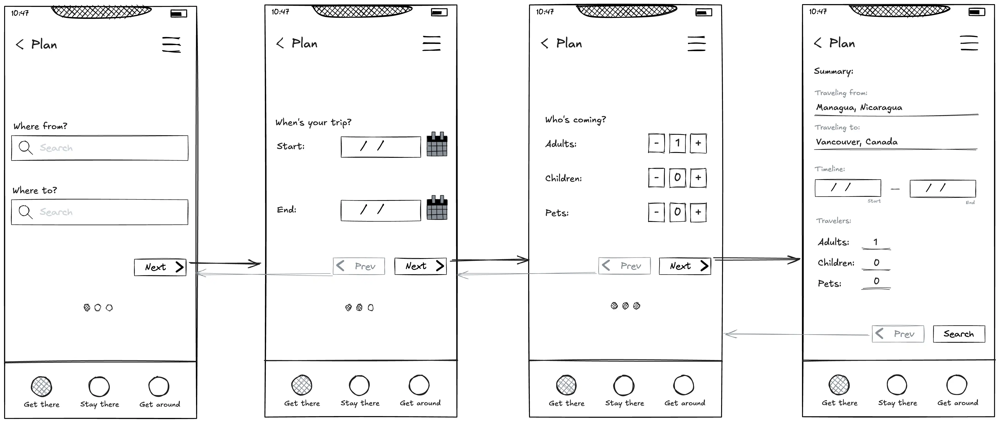 Figure 1: Flight search user-flow.
Once the user has declared their information, they should be given a list of flights to choose from for both travel to and from the destination.
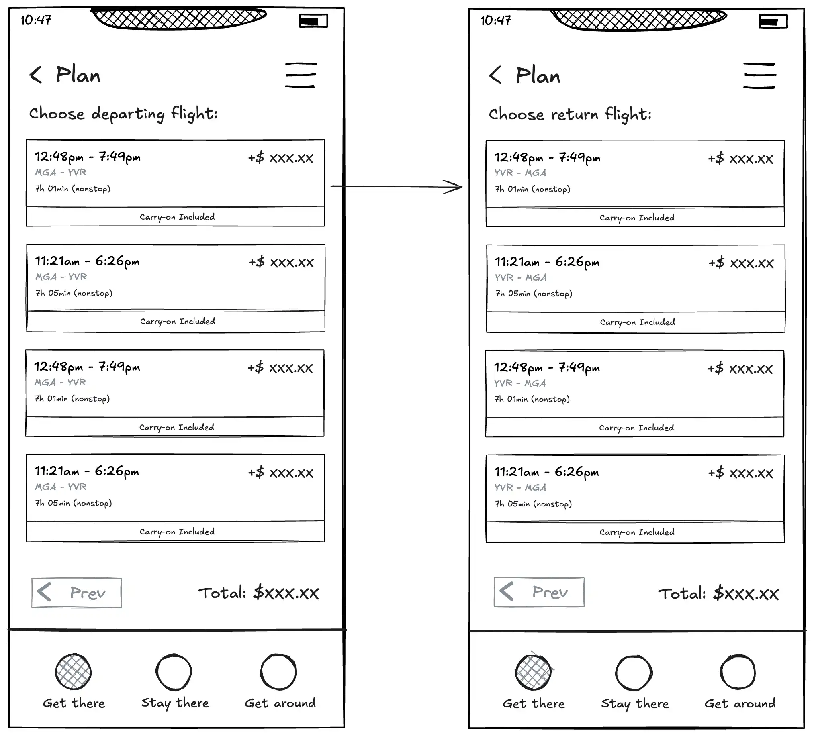 Figure 2: Flight picker user-flow.
Booking Lodging
Next, once the user has booked their flights, they should book their lodging. Services like Airbnb and Vrbo display a map to their users with pins placed on places they can stay. The super-app should have a similar workflow.
It’s possible that users already have a place to stay at their destination, perhaps with a friend or relative. Thus, the option should exist to skip this step.
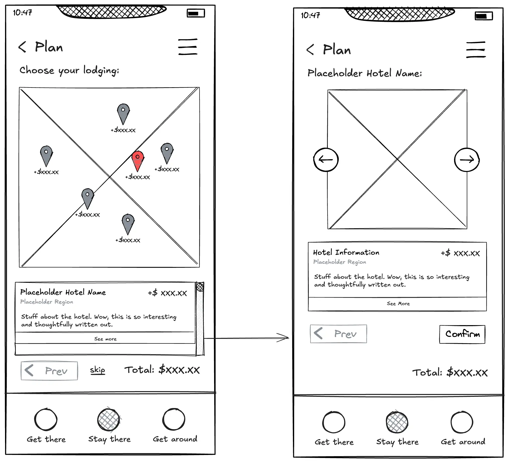 Figure 3: Lodging picker user-flow
Renting a Vehicle
Finally, the user is likely going to want to get around their destination. Services like Turo and Getaround let you search by make and destination. We already know the user’s destination, so we don’t need to ask them for that. Make, however, should be asked for.
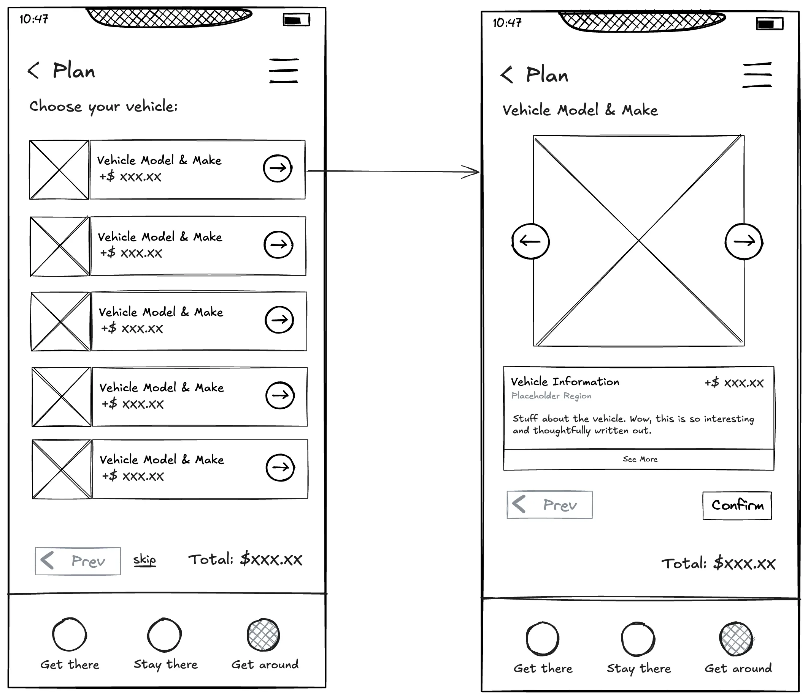 Figure 4: Vehicle picker user-flow
Summary and Confirmation
The user should be shown a summary of their choices and the final price they’ll be paying. Also, we can display travel visa requirements based on the user’s supplied government ID. Finally, we can display a call to action that points the user to the Explore tab which lets them book activities at their destination.
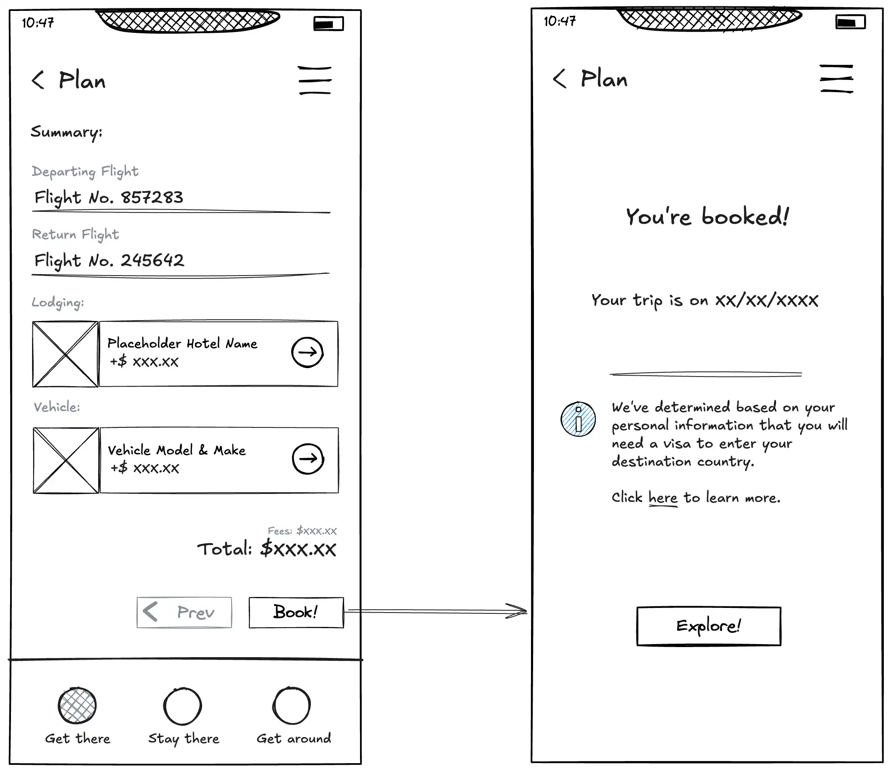 Figure 5: Travel confirmation user-flow
Handling User Information
Some of the steps discussed in the previous section require the user’s information. When the user creates their account, they should be prompted to complete their profile. The profile section would contain the user’s government ID and a payment method which would allow the app to process the user’s requests.
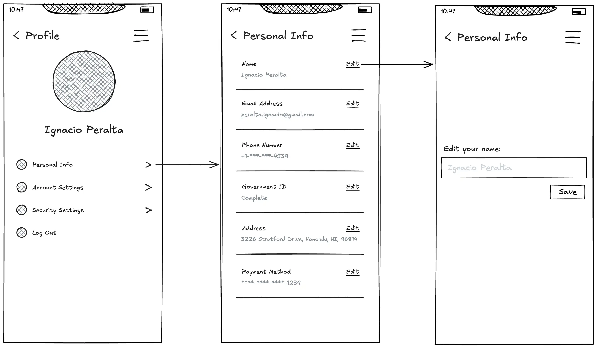 Figure 6: Profile completion user-flow.
Explore!
Once the user has booked their flights, lodging, and vehicle rental, they are directed to the app’s explore tab. This tab allows them to register for activities at their destination. Generally, when people book travel they have some activities in mind, but they haven’t planned every day out. The explore tab gives them a place to plan other outings besides the ones they already have in mind.
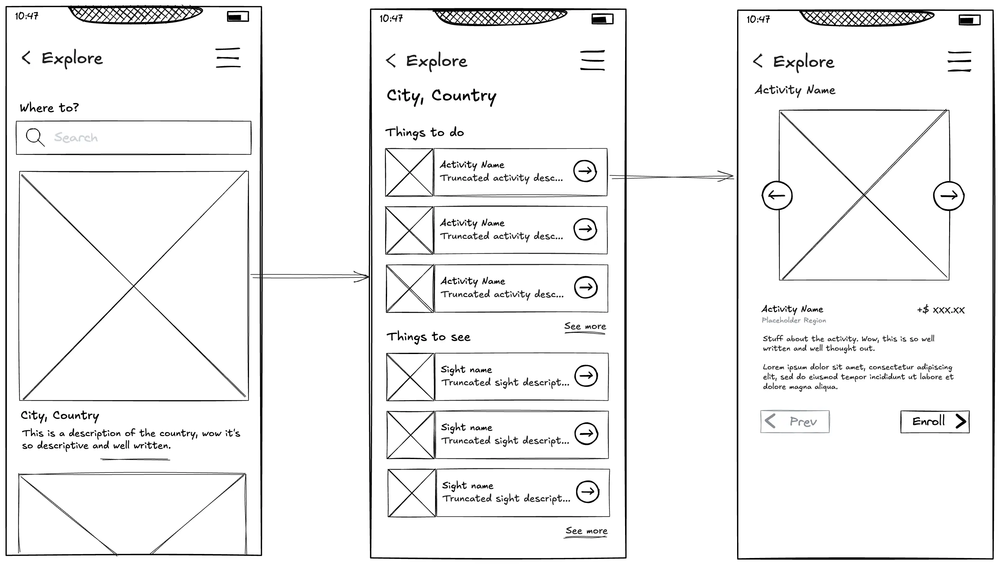 Figure 7: Explore tab user-flow.
Once the user has selected an activity, they should be given a registration page that asks them for their information and books their registration for the activity.
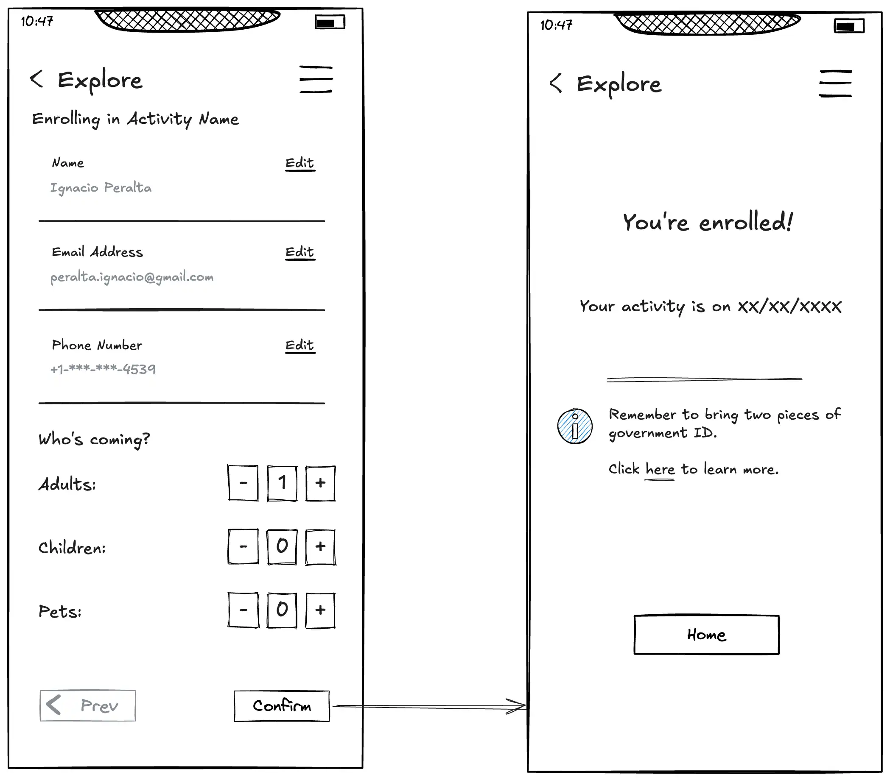 Figure 7: Activity booking user-flow.
Past Trips
The user should also be able to browse trips they have been on using the app. It should show their flight information, their lodging information, and their vehicle rental information as well.
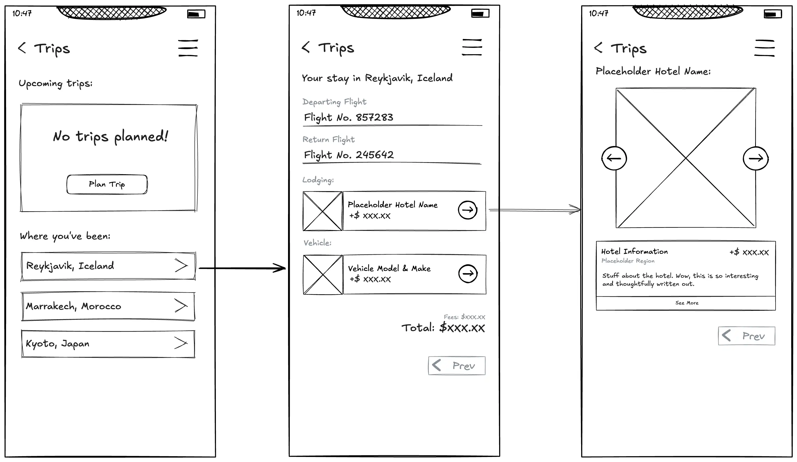 Figure 7: Past trip user-flow.
Support
The user should also be able to ask for support during their travels. This section was inspired by Graebel’s support form. There should be a section for emergency support that is processed with priority.
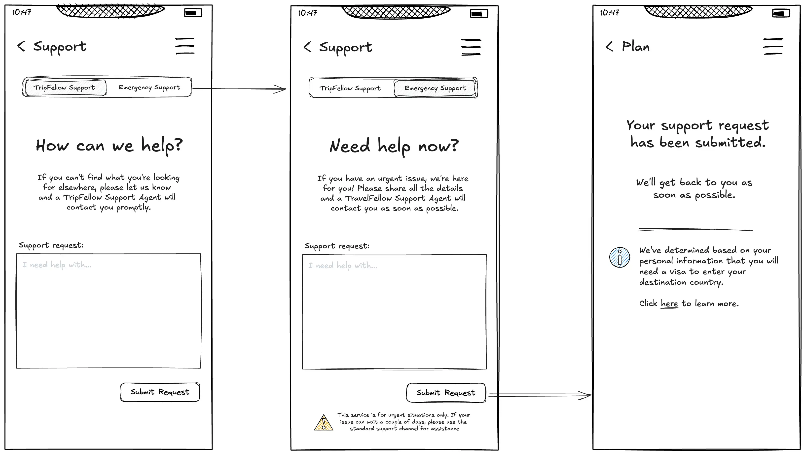 Figure 7: Support user-flow.
Research and Analysis
The following interview questions were asked to 3 participants:
Interview Questions
- What challenges do you face when using separate apps for booking flights, lodging, and vehicle rentals?
- Would having all your travel details (flights, lodging, vehicle) in one app reduce your travel planning stress?
- Do you prefer to use a map-based interface to browse lodging options, or would a list of filtered results be more helpful?
- Would you like the app to suggest travel destinations or activities based on your travel history?
- Have you ever needed urgent support while traveling?
Interview Results
Travelers seemed to agree that having multiple bookings is stressful and that having an app manage your bookings could improve their travel experience. Duplicate information and inconsistent synchronization between different booking services were also listed as challenges faced when using multiple services.
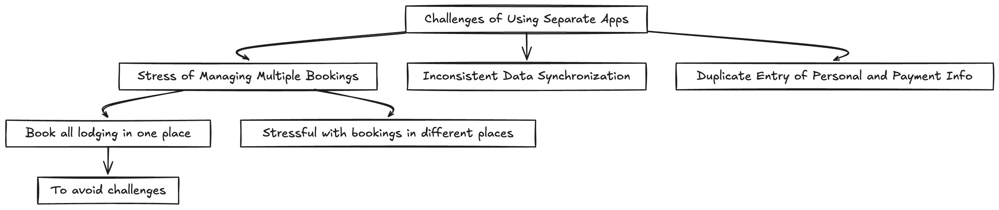 Figure 8: Challenges faced by travelers.
All respondents agreed that a single app would reduce their stress at time of travel. Most agreed that a map-based interface was superior for browsing for lodging. Most seemed not interested in having travel suggestions made for them. Also, most found that having urgent support was important.
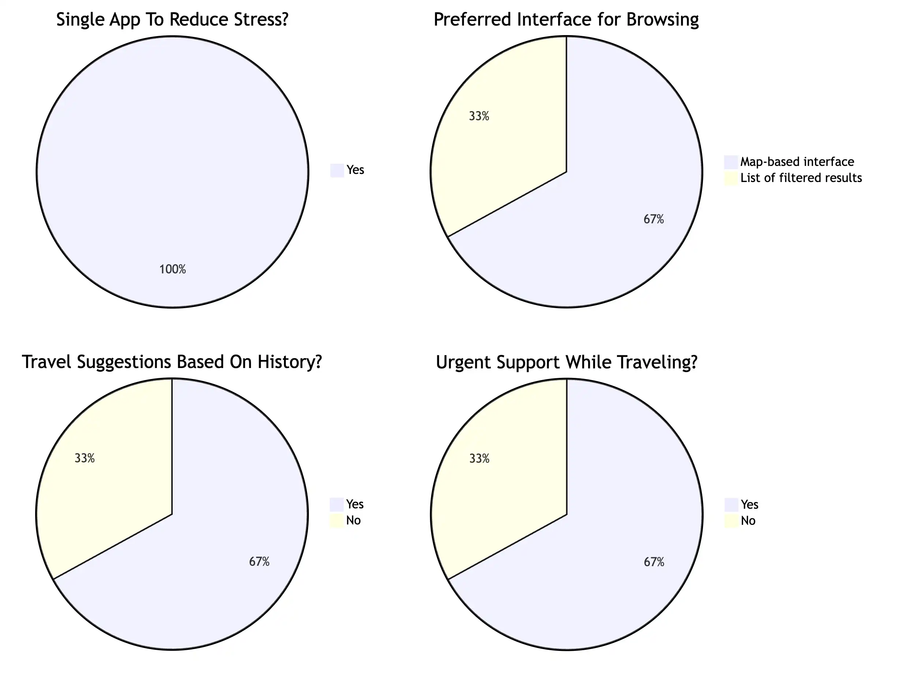 Figure 9: Pie charts corresponding to the survey results.
As a follow up to the survey, users were shown the previously shown wireframes. While the overall satisfaction with the design was high, the participants expressed a desire to make improvements to the visual style of the application.
Key Findings
- Users appreciated the logical organization and user flow of the interface, but felt that making the design more refined could be of benefit.
- The use of “boxy” elements and hard lines was deemed too rigid. Participants expressed a preference for more whitespace and gentler visual cues to guide the user’s attention.
Recommendations
- Incorporate more nuanced typography and graphic elements to create a more modern, sophisticated look.
- Adjust the layout to provide greater separation between key cards and features, reducing visual clutter and improving readability.
Personas Developed
Based on the interview results, the following personas were developed to inform the creation of high-fidelity mockups:
Persona 1
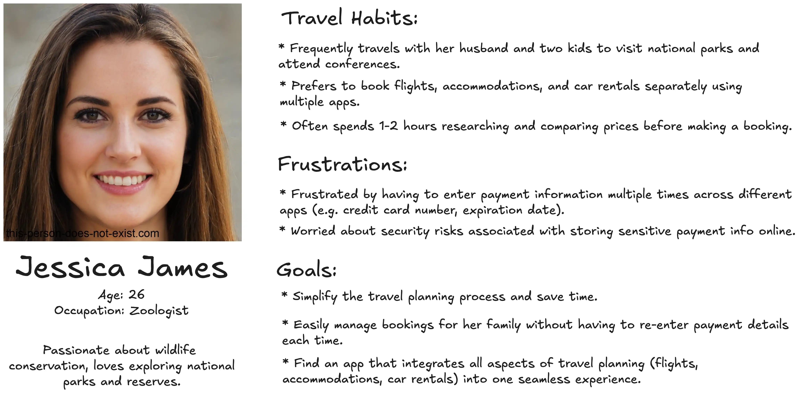 Figure 9: Persona 1.
Persona 2
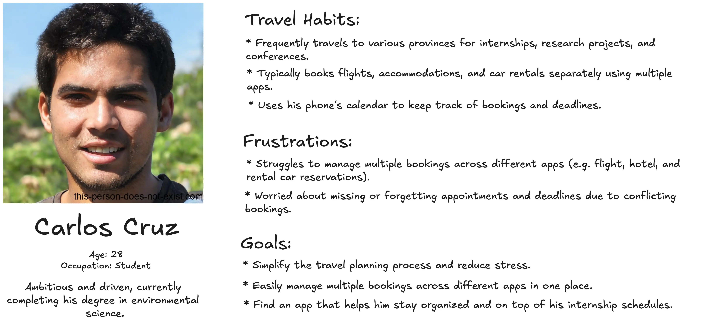 Figure 9: Persona 2.
Redesign and High Fidelity Mockups
Through user interviews and feedback sessions, I gathered valuable insights into what users were looking for in our service’s visual design. Key takeaways included a desire for a sophisticated and polished aesthetic, as well as a preference for ample whitespace to create a clean and uncluttered experience.
To meet these requirements, I decided on a light-colored color palette that would provide a calming and serene atmosphere. My goal was to create a subtle yet effective visual identity that would guide users through the service without overwhelming them.
Color Scheme
After careful consideration, I selected a palette of muted colors that complement each other beautifully. The result is a cohesive look that features:
- A soft artichoke green tone
- Two variations of yellow crayola: a creamy green and a pale yellow
- A delicate champagne
- A light cornsilk shade that adds warmth to the overall design
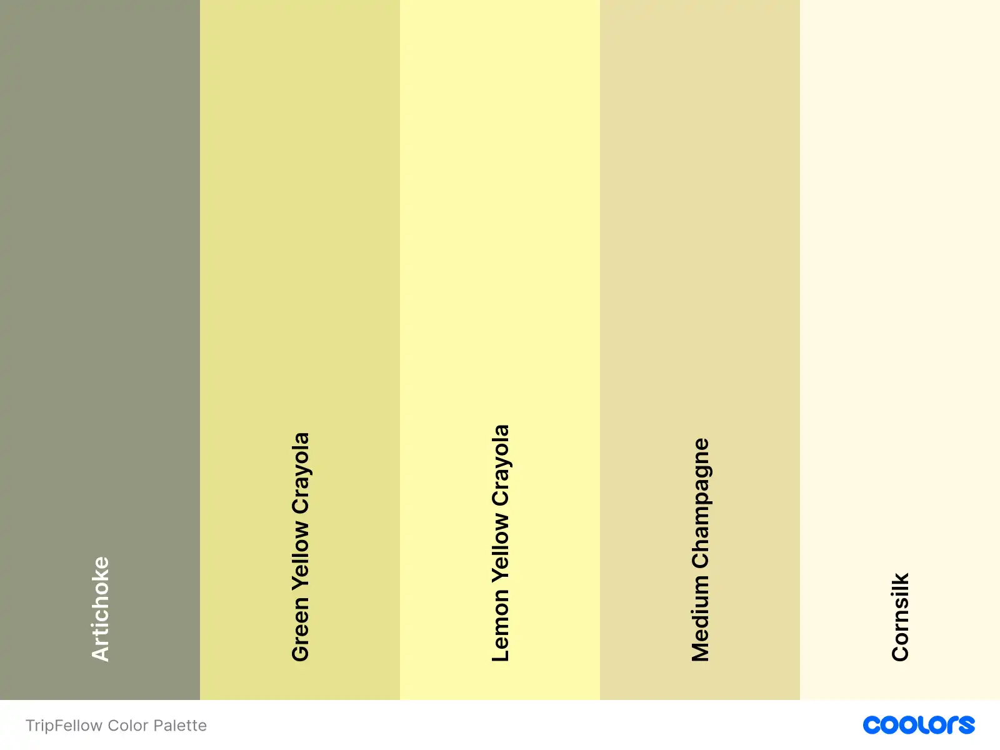 Figure 10: Color Palette
Logo
As I continued to develop the service, I turned my attention to creating a logo that would effectively represent the travel app and its unique value proposition. Given the app’s purpose, incorporating an airplane seemed like a logical and intuitive decision.
To further reinforce the connection between the airplane and the global nature of travel, I surrounded it with a dotted circle. This design element serves as a visual representation of the planet, symbolizing the app’s ability to handle all aspects of travel planning. The use of a dotted circle also conveys a sense of unity and wholeness, implying that the app is comprehensive and integrated.
Figure 11: Logo in different colors
Mockups
Onboarding
The onboarding process should prompt the user to provide all the basic information that is required to set up their accounts. To further simplify the process, it should prompt the user to create an account using a social authentication method. There are many providers such as Facebook or Sign In with Apple. Sign In with Apple is particularly powerful as it integrates with their whole ecosystem, making it easy to sign in from any Apple device. For this example, I’m using Google Auth.
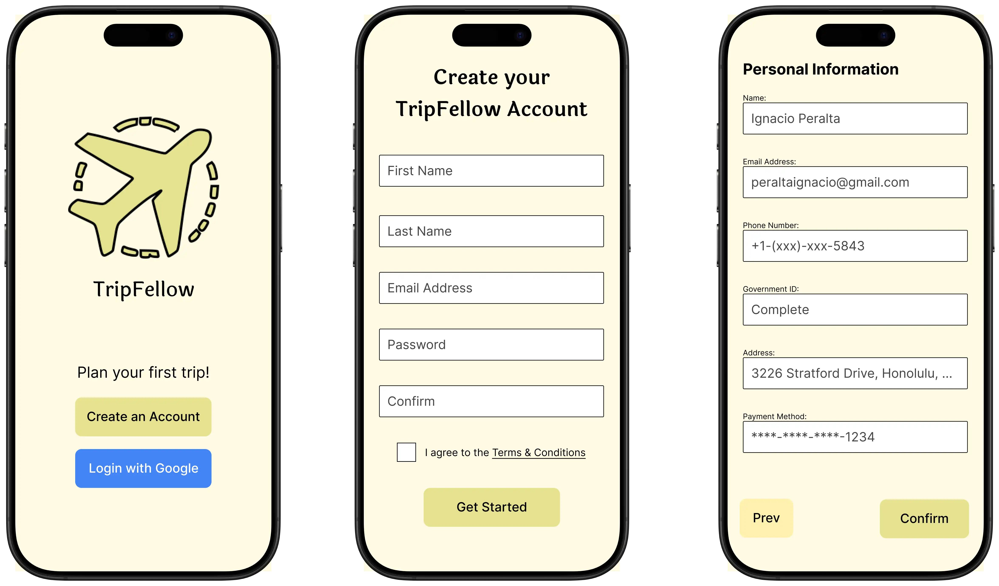 Figure 12: Onboarding screens
Planning a Trip
The process for planning a trip is almost unchanged from the original wireframes.
- Selecting a flight: The user should be able to select an outbound flight and a return flight. I learned from user surveys that the users want less clutter. To achieve a more streamlined look, I removed the borders from the flight cards and instead changed their background to contrast with the main background. 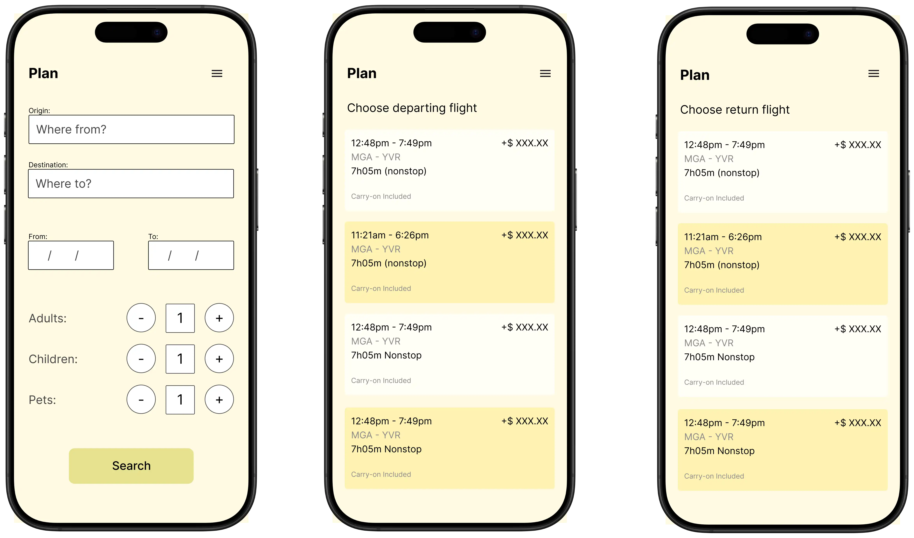 Figure 12: Selecting flights
- Choosing Lodging: The user should be able to select a place to stay while they’re at their destination. From user feedback, I learned that some users like having a list view with filters. Thus, we provide a combination of the two. The user should also be able to view pictures and information related to the lodging they’re choosing. 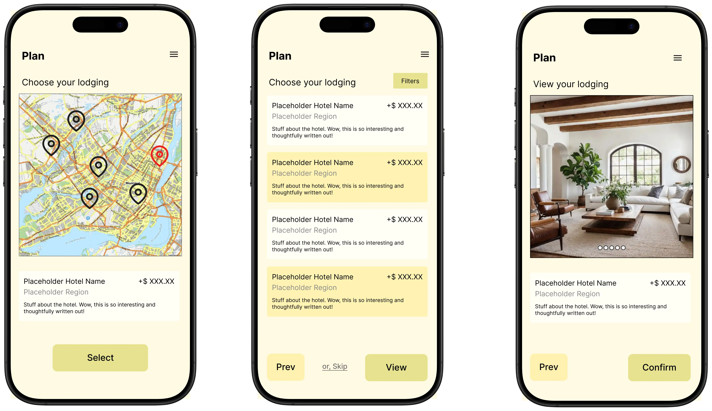 Figure 13: Selecting lodging
- Choosing a Vehicle: The user should be able to select a vehicle to use while they’re at their destination. Like lodging, the user should be able to view pictures and information related to the vehicle they’re choosing. 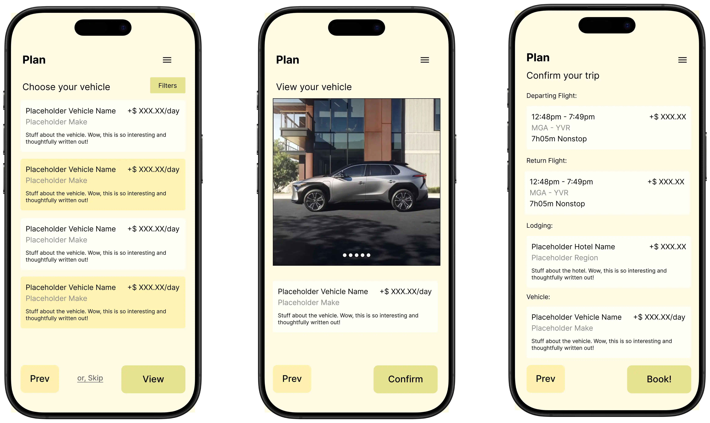 Figure 14: Selecting a vehicle
- Booked Screen: The user should be shown a success screen when they’ve successfully booked. 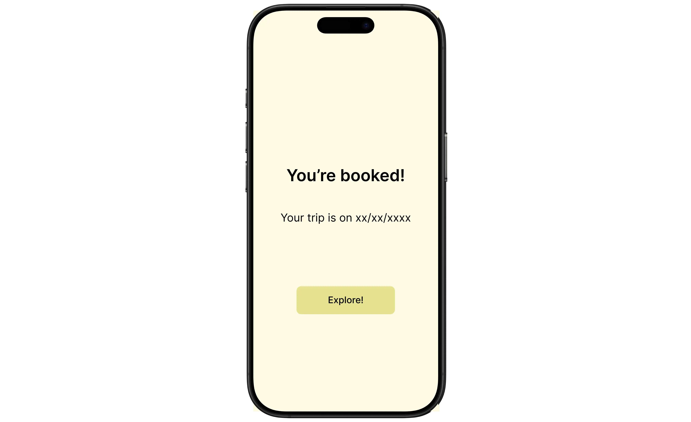 Figure 15: Success screen
Exploring The Destination
Users should be able to book activities that are at their destination using our app. The process is similar to booking a hotel or renting a car: the user should be shown their options. Then, when they select an option, they should be shown pictures related to the activity and also information related to the activity.
 Figure 16: Booking an activity
Figure 16: Booking an activity
Then, the user should be able to get tickets for their whole group if necessary, and be shown a success screen.
 Figure 17: Booking an activity
Figure 17: Booking an activity
Requesting Support
The support screen is essentially unchanged.
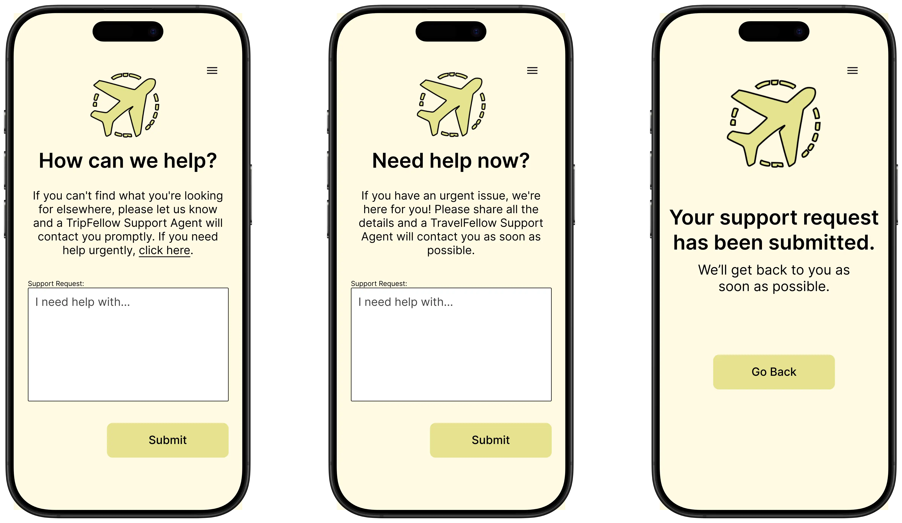 Figure 18: Requesting support
Conclusion
In conclusion, a travel companion super app offers an elegant solution to the fragmented nature of the current travel experience. By integrating all these services, from flight booking, reservation of lodging and vehicles, into a single platform, this app addresses core pain points faced by travelers. Throughout the design process, users highlighted the need for a streamlined and visually appealing interace that minimizes stress and enhances their travel experience. Wireframes were used to survey potential users on their needs, and high-fidelity mockups were created with their feedback in mind. The new design focuses on simplicity, cohesiveness, and usablility. The sophisticated color palette, refined typography, and spacious layout contribute to an aesthetically pleasing interface that prioritizes user comfort and ease of use.